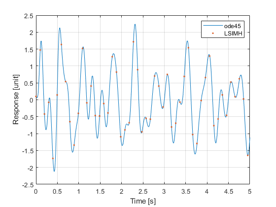

How to use f_LSIMH
f_LSIMH computes the exact response of an LTI system subject to complex exponential input (harmonic functions, decaying sines, decaying exponentials). The excitation can be preprocessed in frequency-domain to remove undesired or low frequency components. The solution is correct independently from step size and provides the reference solution for other methods; its reference provides the mathematical details.
Contents
Define model
Load 4-DoF system from https://www.mathworks.com/matlabcentral/fileexchange/68657-ooma-toolbox
clc, close all m = 10*ones(1,4); d = 10*ones(1,4); k = 10000*ones(1,4); M = diag(m); K = [k(1)+k(2) -k(2) 0 0 ;... -k(2) k(2)+k(3) -k(3) 0 ;... 0 -k(3) k(3)+k(4) -k(4) ; 0 0 -k(4) k(4)]; D = [d(1)+d(2) -d(2) 0 0 ;... -d(2) d(2)+d(3) -d(3) 0 ;... 0 -d(3) d(3)+d(4) -d(4) ; 0 0 -d(4) d(4)];
convert the MDK system into state-space model
[A,B,C,D] = aux_mdk2ss(M,D,K);
Define parameters
Define channels of interests and initial conditions
i = 1; j = 2; % desired output (response) and input (excitation) channels x0 = zeros(size(A,1),1); x0(1) = .1; % initial conditions
Define simulation duration
T = 5; % duration of the N = 2001; % number of time steps for ode45 NH = 51; % number of time steps for LSIMH (independent of time step)
Define input vector
dt = T/(N-1); % time step t = (0:N-1).'*dt; % time axis u = 10000*(cos(12*2*pi/T*t) + sin(20*2*pi/T*t)); % some harmonic excitation
f_LSIMH does not take a input vector, but its representation as a sum of complex exponentials. These can be taken as the FFT coefficients of the input vector, which is a good approach for harmonic functions. However, if the input contains decaying sines or there is leakage, then many FFT coefficients are obtained. Assuming the input is known exactly (for example for gust excitation or the discharge of an electric component), better accuracy and faster computations are obtained by providing its coefficients directly (see help f_LSIMH):
cs = aux_getFFTcoeffs(dt,u);
Calculate response
Compute the exact solution with f_LSIMH using a large time step:
[y0,t0,~,u0] = f_LSIMH(A,B(:,j),C(i,:),D(i,j),cs,T*2/(2*NH-1),x0,NH);
Compare solution with ode45 (approximate) using a short time step:
ufcn = griddedInterpolant(t,u,'linear'); % build interpolant [t1,x] = ode45(@aux_ssfun,t,x0,odeset('MaxStep',dt),A,B(:,j),ufcn); % integrate states y1 = x*C(i,:).'+u*D(i,j); % compute outputs
Plot results
Compare the two solutions. The f_LSIMH
figure plot(t1,y1,'-',t0,real(y0),'.') ylabel('Response [unit]'), xlabel('Time [s]'), grid on legend('ode45','LSIMH')
f_LSIMH can be used for computing the exact response to multi-sine random-phase excitation independently of step size.
Auxiliary functions
function cw = aux_getFFTcoeffs(dt,u) % Example function for extracting FFT coefficients of input vector % Exact when u is a harmonic function and there is no leakage TollPeriodicity = 100*eps; TollAmplitude = 100*eps; if norm(u(1,:)-u(end,:))/norm(u(1,:))<TollPeriodicity, u(end,:) = []; end L = size(u,1); % length of excitation ~= N (simulation length) c = fft(u) / L; dtu = dt; % Double-sided frequency vector if mod(L,2) w = 0:(L+1)/2-1; else w = 0:L/2; end w = 2*pi/dtu/(L-1)*[w,-w(end+mod(L,2)-1:-1:2)].'; % Remove frequency bins with low amplitudes idx = all(abs(c)./max(abs(c))<TollAmplitude,2); c(idx,:) = []; w(idx) = []; % Output cw = [c,1i*w]; end
function dx = aux_ssfun(t,x,A,B,ufcn) u = ufcn(t); % evaluate excitation at integrator time dx = A*x + B*u; % state equation end
function [A,B,C,D] = aux_mdk2ss(M,D,K) Nm = size(M,1); A = [zeros(Nm),eye(Nm);-M\K,-M\D]; B = [zeros(Nm);M\eye(Nm)]; C = [eye(Nm),zeros(Nm)]; D = zeros(Nm); end